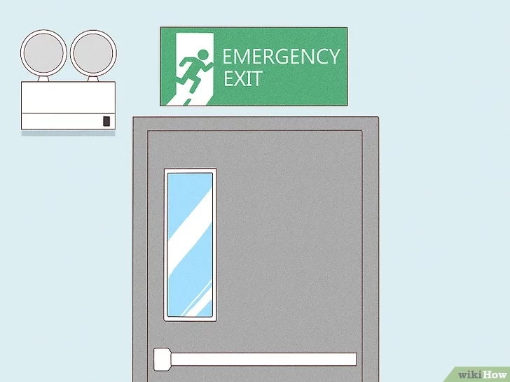
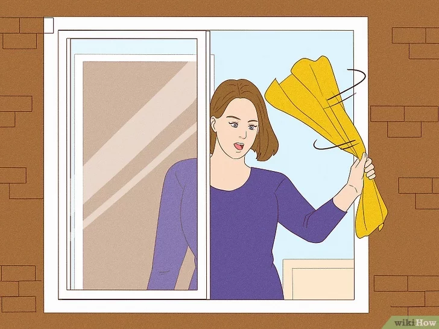

House Fire Safety Tips
What to Do During a House Fire
- Stay low to the ground to avoid smoke inhalation.
- Check doors for heat before opening. If a door is hot, do not open it.
- Leave the building immediately. Do not waste time gathering belongings.
- Close doors behind you to slow down the spread of fire.
- Call emergency services once you're safely outside.
- Do not re-enter the burning building for any reason.
- Designate a meeting spot outside the house to ensure everyone is safe and accounted for.
- Follow instructions from firefighters when they arrive.



For more information, click here.